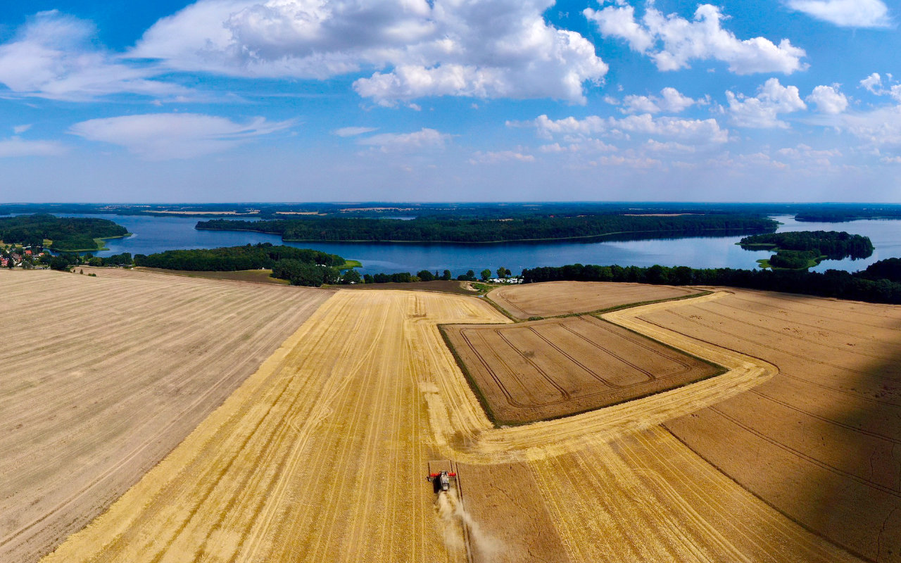
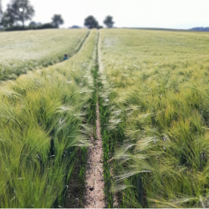
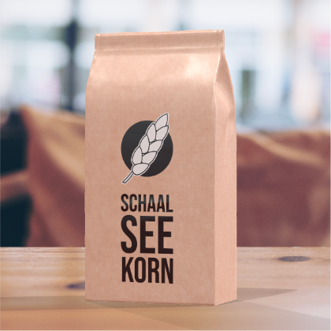
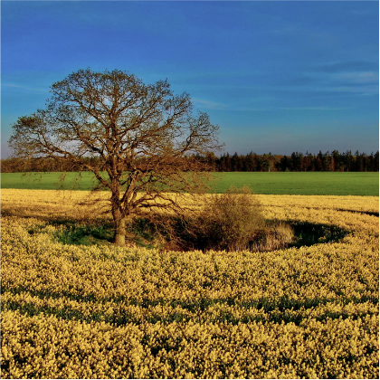
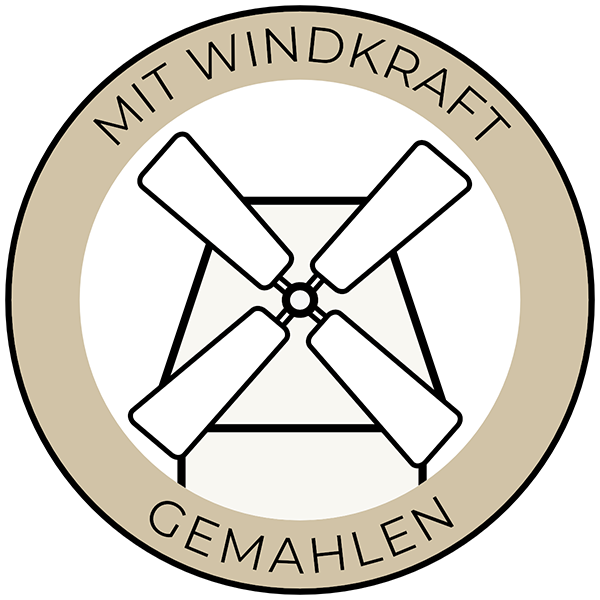
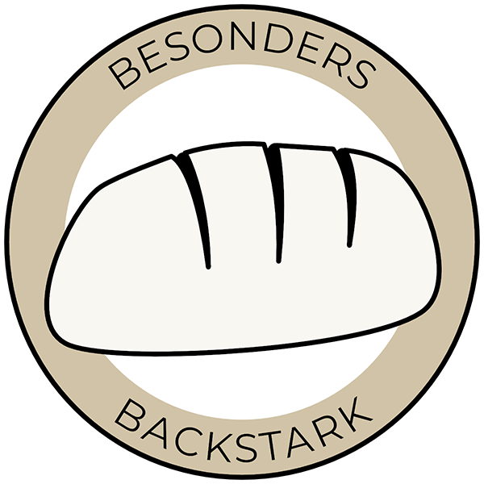
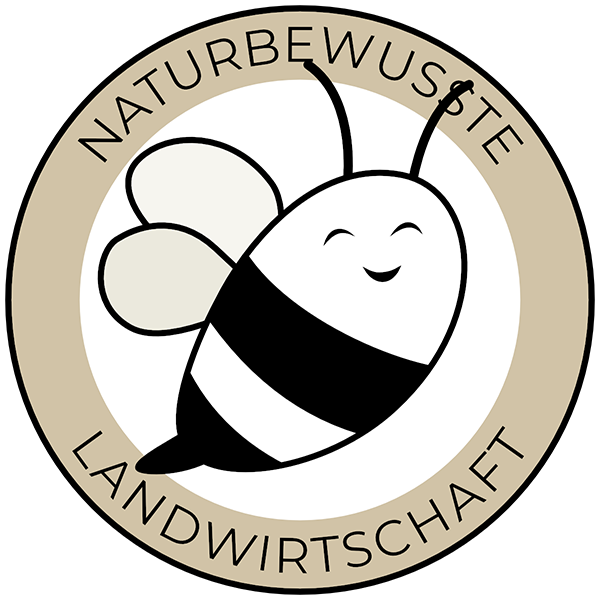

Die Schaalseeregion, gelegen zwischen Lübeck, Schwerin und Hamburg, bietet eine einzigartige Kultur- und Naturlandschaft, die von 1945–1989 durch die innerdeutsche Grenze in Ost und West geteilt wurde. Die Grenze verlief mitten durch den See und wurde vor allem von der Ostseite stark abgeschirmt. Dies brachte harte Einschnitte für die dort lebenden Menschen mit sich, ermöglichte der Natur aber in besonderer Weise, sich zu entfalten. Seit 1989 darf die gesamte Schaalseeregion wieder zusammenwachsen und ist nur noch durch die Landesgrenze voneinander getrennt. Sie zieht viele Menschen mit ihrem sanften Tourismus an.